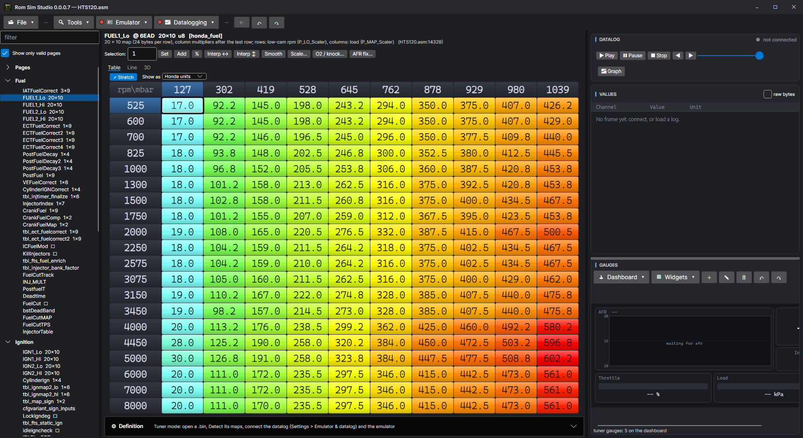
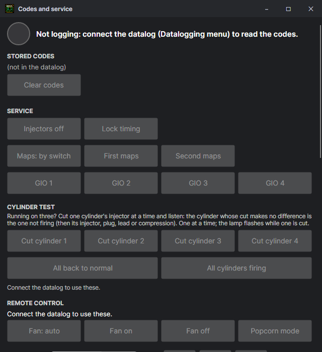
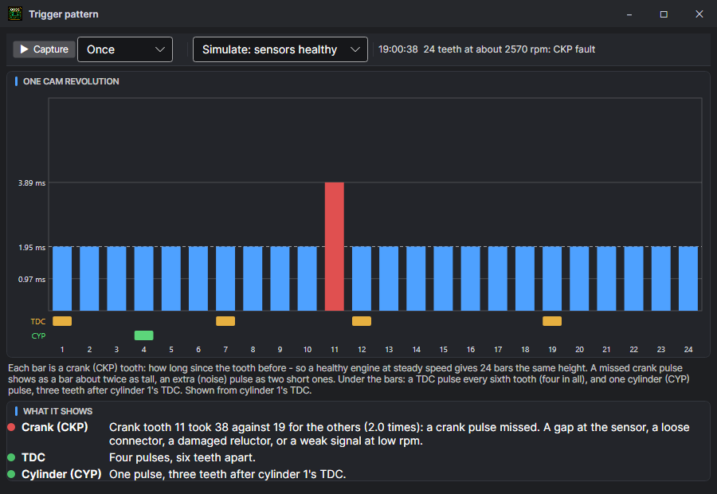
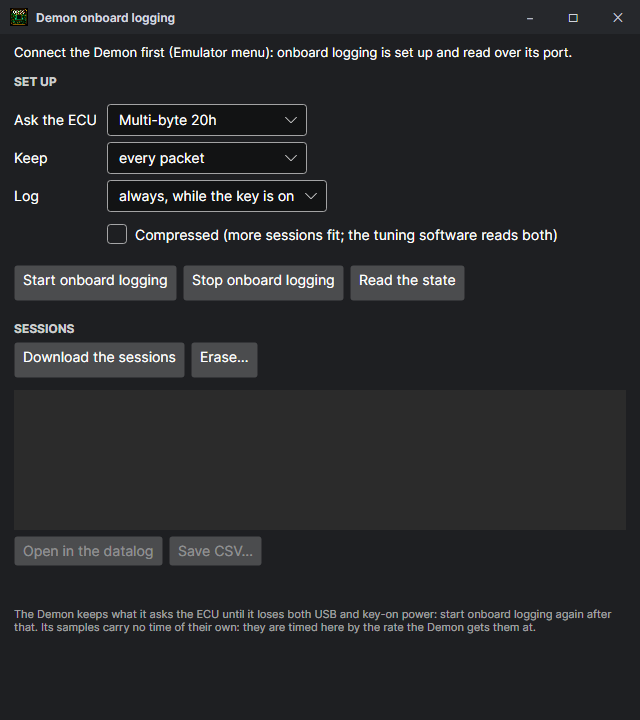

Datalogging
Read what the ECU sees as the car runs — or the simulated ROM — record it, play it back over the maps, and let it tell you what the fuel wants.
Connecting to a car
- Plug the datalog cable into the ECU's CN2 header and the laptop; note the serial port it gets.
- Settings > Emulator & datalog: pick the port and the protocol (or leave it on auto-detect).
- Press Connect on the Datalog panel. The dot on the Datalogging menu goes green; it blinks orange while a lost link is being rebuilt, and is red when there is none.
| Protocol | ROMs |
|---|---|
| HTS / ISR (10h, 20h, C0h+n, 40h packets) | HTS, the skeleton's Datalogging: HTS / ISR frame module, and most tuned ROMs of that family |
| Channel stream (version 3) | The skeleton's Datalogging: channel stream module: only the channels you tick |
| Crome / QD3 | Crome ROMs and the skeleton's Datalogging: QD3 frame module |
| HTS single byte, raw 10h | Older and simpler loggers |
| P13 46h / 20h | The MSM66911 (P13 / P14) ECUs |
A stock ROM does not stream a datalog: its tester link is not something the usual tools read. Build a datalogging module into a skeleton ROM to log it.
Detect layout works out an unknown ROM's datalog format by asking the simulated ROM and reading what it answers.
Logging the simulator
Choose SIMULATOR as the port: the simulated ROM answers on a serial port of its own, exactly as the ECU would, so a datalog setup can be tried without a car. Its timeouts run in the simulated ECU's time, so a slow PC still finds the right protocol (HTS115 and HTS120 answer the 20h frame). Or the other way round — Drive the simulator with the car's readings (Settings > Emulator & datalog) feeds a car's log into the simulated engine.
The Datalog panel

- Connect — start logging the car (or the simulator). Every frame is kept as it comes.
- ▶ Play / ❚❚ Pause / ■ Stop, ◀ ▶ a frame at a time, and the slider — play a loaded log back in real time; the live cell and trail follow it over the maps exactly as when it was recorded. In the simulator, Play runs the simulated ROM through the log.
- Graph / Parameters — the toggle beside the slider switches between the scrolling graph and the frame's values.
- Load log… / Save log… — an .rlog (the log, the ROM it ran on and the tuning settings in one file, so all three open together), a CSV, or the binary formats other loggers write. Saved as CSV with every channel and the raw frame. An HTS log gives all of its values: where the engine is in the maps, the fuel and ignition corrections, every input and output bit, the HTS features' states, the boost controller, the analog and emulator inputs, the wideband and the EGT and pressure channels. Opening a log while logging live stops the live log so the file is what is shown.
- Values are shown in the units picked in Settings > Units (°F, mph, psi...): the values list, the graph and the gauges alike.
- Pick several values in the values list: Ctrl+click adds or takes one, Shift+click a run of them, drag a box over the ones you want (Ctrl held adds to those picked), Ctrl+A all, Esc none. Right-click for gauges of them: Add gauges (a lamp for an on / off value, a dial for the rpm, a bar for the rest), or all as dials, bars, numbers, rolling graphs or lamps, laid out under the gauges already there; Float them in a widget; or copy their names, values and units.
- Graph… — the whole log as a graph in a window of its own: any channels against time, each on its own scale, with a cursor that reads them all.
Channels
Datalog > Channels… (on a ROM with the channel stream): tick what the car has — no A/C, no knock sensor — so the frame stays short and fast. Mark the readings that change slowly (temperatures, battery, codes) slow: they take turns, one a frame, instead of riding in every frame. Every byte the ECU sends costs it about a tenth of a millisecond, and at high rpm its main loop — where it works out the spark — has little time to spare. So a ROM made here paces what it sends by its spark calculation: a few bytes each time it works the spark out, fewer the higher the rpm (32 under 1,500 rpm, 8 to 3,500, 4 to 5,000, 2 to 6,500, then 1). Logging never takes the engine code's time — in the simulator the spark is worked out as often as with no logging at all, and never two calculations missed in a row — at the cost of data at high rpm: about 900 bytes a second at idle, 400 at cruise, 150 at 5,000 rpm and 50–80 past 6,500. A shorter frame really is more frames, more so at high rpm; the window says how many a second you will get. With the engine stopped the ECU sends as fast as the line goes. A ROM made here can run its datalog line at 62,500 baud instead (Serial port page, 62,500 baud instead of 38,400): each frame comes in sooner, and more of them with the engine stopped (running, the pacing above sets the amount). It needs a cable that can be set to exactly 62,500 — an FTDI one can; 57,600 will not do — and Settings > Datalog > Baud rate set to 62500 to match. HTS and other loggers, and a Demon, want 38400, so leave it off for them. Other loggers on these ROMs are paced the same way: at the rev limit a 52-byte HTS frame takes a second or two. Rpm, injector time and the other two-byte values are read in one go, so they are never half one reading and half the next. Change the channels while logging and the ECU is sent the new list at once — the values and the graph follow it. A channel the ROM connected cannot send (its table is shorter, without Datalogging: every channel) is greyed in the window and named on the datalog page with how to add it, rather than left out quietly; picking channels while logging with another protocol offers to switch to the channel stream.
Every channel
Build the ROM with Datalogging: every channel (in Default) and the list grows from 53 channels to 188. The window has a search box, and Everything ticks them all: rpm, MAP, throttle, injector time, advance, speed and the cut and limiter states in every frame, and the rest taking turns as slow channels. The new channels are:
| Group | Channels |
|---|---|
| Limiters and cuts | rev_limit (the rev limiter, or any limiter module, is cutting), overrun_cut, fuel_cut, and which module wants a cut: limit_revlimit, limit_launch, limit_fts, limit_boostcut, limit_ectpro, limit_traction and the rest. |
| Fuel corrections | The fuel map's value before any correction, then each correction: warm-up (six), intake air, coolant, baro (three), acceleration and its scales, tip-in, post-start, knock, and the injector dead time in ms. |
| Ignition corrections | Intake air, throttle, cold, rpm retard, rpm correction, knock retard (degrees), knock against coolant, and dwell. |
| Idle | The idle target in rpm, and its corrections. |
| VTEC | VTEC engaged, past the stock points, and the load it needs. |
| Engine state | The map rpm and load indexes, time since start, and the engine's flag bytes, each bit a channel of its own under the name of what it means, worked out from the stock code: cranking, cold_start, o2_ready, o2_rich, knock_window_closed, overrun_cut_armed, throttle_open, crank_sync_lost... The switch inputs (sw_brake, sw_park_neutral, sw_ac_request...) and the board's options (opt_knock_sensor, opt_automatic, opt_vtec_pressure_switch...). Hover a value on the datalog page for what it is. |
| Functions (debug) | Every byte the functions in the ROM keep their state in (module RAM), named as in their source from the build open: rolling idle's rollidle_injectors (the injectors it left out last, as digits — 14 is injectors 1 and 4, 0 a spark) and rollidle_drops (how many it has left out), the trim traction control, the wideband loop or the fuel trim is giving, a GIO's delay counting, the serial inputs. Two-byte values come as the word and its two bytes. The Channels window says what each byte holds in this build. |
| Your RAM addresses | Eight RAM bytes of your choice, set on the ROM's Datalog: RAM addresses page (80h–47Fh). Each is logged under its address and what the memory map says is there — ram_0b4_road_speed — and the Channels window shows both. |
With that many channels the slow ones are sent as a range: every channel from the first slow one to the last comes round in turn, so each slow value updates every second or two. Up to 13 bytes still go in every frame; picks past that come round with the slow ones.
Every frame starts with A5h, carries the ECU's own clock and ends in a checksum. Out of step (the start, or a byte spoilt on the line) a frame is only taken when the one after it lines up too and the clock has moved on, so a noisy cable loses frames but never shows wrong ones. The HTS 20h frame is asked for one at a time; after a late or spoilt answer the line is let go quiet before the next question.
Serial inputs
The datalog cable works both ways. With the serial inputs module in the ROM, the laptop — or any small board wired to the ECU's datalog receive line — can send values to the ECU, and the ROM uses them like extra sensor inputs. The idea: things the ECU has no spare pin for, or that the laptop already knows, become inputs a module can act on.
- What is sent: three bytes for each value —
FFh, the input's number (00h–FDh, so 254 inputs), the value (00h–FEh). No answer comes back, and a running channel stream carries on through them.FFhis never a number or a value, so a lost byte is over at the nextFFh. - What the ROM keeps: eight of them — the Serial inputs page says which input number goes in each of the eight (a device may send many; the rest are ignored), what each reads as before any arrives, and how long without any before they all go back to those defaults (a cable pulled out leaves nothing stuck on).
- Where they are used: as an analog input — closed loop, lean protection and flex fuel can read serial input 1–8 instead of a pin (input 4–11 in their lists); and as a switch — every module with an input list (launch, full throttle shift, the GIO outputs, the map switch…) offers serial input 1–8, on while its value is not 0.
- Sending them from the laptop: Datalog > Channels… > Send to the ECU: pick the input number and the log channel it comes from, with a scale and offset — the wideband's
afr× 10 sends 14.7 as 147. They go 20 times a second while the stream runs. The stream logs what the ECU holds (Serial input 1–8, and the time since one came).
Example: a wideband read by the laptop, sent as serial input 1, picked as closed loop's input — the ECU runs closed loop on a wideband with no wire to its analog pins. Or a switch on a small board sending input 2 as 0 or 1, picked as launch control's input.
Memory read (its own module): any 32 bytes of the ECU's RAM read while the engine runs, in Codes and service > ECU memory — a module's state on the car, not just what a channel sends. The ROM itself is never sent, so a tune stays in the chip.
Codes and service

The codes the ECU has stored and whether the lamp is lit, read from the datalog; Clear codes. On a skeleton ROM with the service commands module: Injectors off (a compression test), Lock timing (for a timing light), the maps chosen, GIO 1–4 forced on. The check-engine lamp flashes quickly while injectors are off or timing is locked.
The cylinder test
An engine running rough on three cylinders: which one is dead? Cut cylinder 1 to 4 cut one cylinder's injector at a time, the others firing. Cut each in turn and listen (or watch the rpm): cutting a good cylinder makes the engine worse; cutting the dead one makes no difference. Then look at that cylinder's injector, plug, lead and compression. Only one is ever cut — cutting another puts the one before back first — and the check-engine lamp flashes while it is. All cylinders firing, All back to normal or a key cycle ends it.
Trigger pattern
Datalogging > Trigger pattern… shows the distributor's three signals as the ECU sees them, one cam revolution (two crank turns) at a time, for a car that misfires, cuts out or will not start and a sensor is suspected. It needs the Trigger pattern log function in the ROM (File > Change functions; it comes with the channel stream) and the datalog connected.

- Each bar is a crank (CKP) tooth: how long since the tooth before. At a steady speed a healthy engine gives 24 bars the same height, with the usual height as a dashed line and its time in milliseconds.
- A bar about twice as tall is a crank pulse missed: a gap at the sensor, a loose connector, a damaged reluctor, a weak signal at low rpm. A missed pulse can show twice in one capture.
- Two short bars where one should be are an extra pulse: noise on the CKP line — its shield, a coil lead or plug wire next to it, a bad ground.
- The TDC row should have a pulse every sixth tooth (four in all); the CYP row one pulse, three teeth after cylinder 1's TDC. Missing, extra or out of place, and the window names it. The bars start from cylinder 1's TDC.
Capture takes one revolution (the datalog pauses for a moment). To catch a fault that comes and goes — over bumps, or once the engine is hot — pick Every 2 s, Every 1 s or Real time (one revolution straight after another, about three a second; the datalog's other channels pause meanwhile). A capture lost on the line leaves the last good one up and is counted as missed beside the list; the repeat carries on. It works cranking too: a no-start with no crank pulse at all says so. Logging the simulator, Simulate puts a sensor fault on the signals so you can see what each looks like.
With the remote control commands module, a Remote control section adds the fan on or off, popcorn mode, a rev and a speed limit, boost cut and VTEC steps, and the anti-start password — the same commands a phone or button box sends. Every byte the ECU understands, and how to build such a panel: Remote control and serial commands.
Smoothing
Smooth values takes the noise out of a reading: the last few frames are looked at together, a reading far from their median (6000, 28, 6000 rpm — a spike on the line, not the engine) is dropped, and the rest are blended. A real change gets through as soon as the next frame agrees. The raw frame is always kept as it came. Settings > Emulator & datalog > Smoothing sets how many frames and how far is too far.
Widebands and extra readings
A wideband on its own serial port (AEM, Zeitronix, TechEdge, PLX, Innovate, 14Point7 and others), or on one of the ECU's analog inputs; and aux channels worked out from the raw frame bytes with an expression of your own. Both in Settings > Emulator & datalog.
Fixing the fuel from a log
Set the AFR you want in Settings > Targets (a grid shaped like the fuel map). The measured AFR is averaged into every cell the engine sat in, and the correction to reach the target is worked out cell by cell; Settings > Corrections sets how it is applied. Nothing changes until you apply it, and it is one undo step.
Moates Demon onboard logging

A Demon can ask the ECU for the datalog itself and keep it in its memory, with no laptop in the car. Set what it asks for, every how-many-th packet to keep and the triggers that start a session; switch it on; later read the sessions back into the Datalog panel or a CSV.